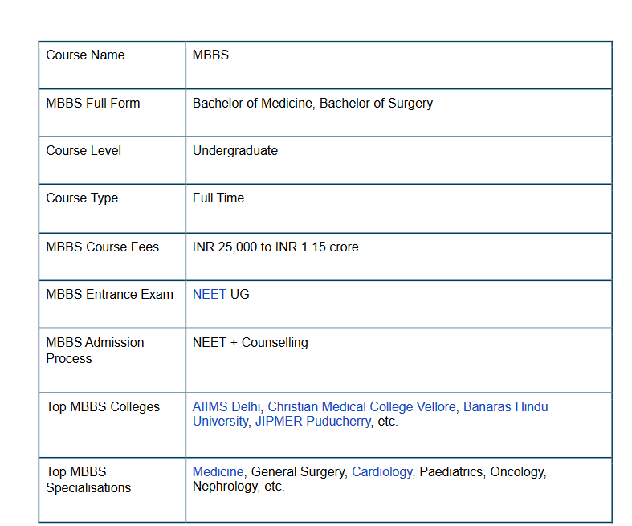

●Aeronautical Engineering
● Automobile Engineering
● Civil Engineering
● Computer Science and Engineering
● Biotechnology Engineering
● Electrical and Electronics Engineering
● Electronics and Communication Engineering
● Automation and Robotics
● Petroleum Engineering
● Instrumentation Engineering
● Ceramic Engineering
● Chemical Engineering
● Structural Engineering
● Transportation Engineering
● Construction Engineering
● Power Engineering
● Robotics Engineering
● Textile Engineering
● Smart Manufacturing & Automation
BTech stands for Bachelor of Technology. It is an undergraduate four-year course and is offered in various disciplines and specialisations. The admissions to BTech is done on the basis of various national-level and state-level entrance exams and candidates are given admission on the basis of scores and merit list.
While all these specialisations offer bright prospects for students to get into different careers, computer science engineering is probably one of the most sought after course nowadays. This is also reflected in the high cut off exam scores that top engineering colleges including Indian Institutes of Technology (IITs), the Indian Institute of Information Technology (IIITs) and the National Institutes of Technology (NITs) as well as some of the best central universities command from their respective applicants in order to enrol them for this programme.
B.Tech degrees offer students an opportunity to pursue a career in Engineering. The courses are of a duration of 4-years and are spread across 8 semesters. There are typically two kinds of engineering programme: ● 3-year Lateral-Entry B.Tech after Diploma in Engineering ● 4-year B.Tech after Class 12 The four-year programme offers more rigour to students and also covers more with respect to the depth of the curriculum.
The basic eligibility requirement for admissions to any BTech programme is:
● Candidates must have passed the class 12 exam from a recognised board with Physics,
Chemistry and Mathematics as core subjects.
● They must also have secured minimum aggregate marks of 60% in the above subjects
combined.
● Most admissions are done based on the student's performance in the entrance
examination.
● The regular mode of entry to BTech course is through entrance examination after Class
12th. The other mode is called as Lateral-Entry mode, wherein candidates can enrol in
BTech programme in second year.
● Those who possess three-year diploma programme in engineering can enroll in BTech
under Lateral-Entry Scheme.
Please note that the BTech eligibility criteria would vary from institute to institute
Admission Process for BTech
All the BTech aspirants need to follow a similar process for admission to any institute. Various
stages for BTech admissions are given below:
● Firstly, BTech aspirants need to appear and qualify for any of the entrance exams for
admission to an institute.
● National level engineering entrance exams such as JEE Main are accepted by NITs,
IIITs, GFTIs and several other private colleges. JEE Advanced is the entrance exam
conducted for admission to IITs.
● Other than the aforesaid two exams, B Tech Admissions are also conducted through
state-level exams such as WBJEE, KEAM, AP EAMCET, TS EAMCET, MHT CET etc.
and university/college level exams such as BITSAT, VITEEE, SRMJEEE, UPESEAT,
etc. ● All the engineering entrance exams are conducted in April, May and June every
year.
● After the result declaration of every exam, counselling and seat allotment process has
been conducted by the concerned authorities. During counselling, students have to
choose college and courses of their choice based on their ranks.
● After seat allotment, every student needs to visit the allotted engineering college to
complete the admission formalities.
MBBS course is the dream career choice for students across India. Over 18 lakh candidates aspire to pursue an MBBS course as per the latest data. The MBBS is a professional degree required to practise medicine, diagnose ailments, give medication, and perform surgery. There are 91,927 MBBS seats available, with 48,012 (52%) being government seats and 43,915 (48%) being private seats. First-year MBBS studies comprise Anatomy, Biochemistry, and Physiology, while second-year MBBS subjects include 7 subjects. Pharmacology, Anatomy, Pathology, Community Health, Medicine, and other courses are included in the MBBS Syllabus.
MBBS, or Bachelor of Medicine and Bachelor of Surgery, is a five-year undergraduate medical degree programme that teaches students how to conduct diagnoses, find treatment and medicines, and perform surgeries. To know more about the MBBS course, candidates can look at some of the key points of the MBBS course in the table given below
BArch called as Bachelor of Architecture is a four-year undergraduate programme in Architecture which is offered after completing Senior Secondary Education in Science background. The job market for architecture graduates is very promising not only in India but in international market as well. Due to major boost in the economy, architects are always offered opportunities in the field of Public Works Department, Rural and Urban Transformation Projects etc
Individuals with creative and design flare should definitely follow the course, as it will help them transform their amateur and naive skills into creative masterminds. The average income for B.Arch courses in India begins at INR 3,50,000, which is more than the starting salary for other streams. With increasing experience in the profession, the salary will rise sharply and surpass INR 10,00,000 per year. However, this varies by city, with the highest compensation available in areas such as Bangalore, Hyderabad, and others, ranging from INR 70,000 to INR 85,000 per month.
To study a full-time BArch programme, candidates must fulfil the eligibility requirements given
below:
● Candidates must have passed their 10+2 examination or equivalent with Mathematics
as one of the subjects.
● They must have secured a minimum of 50% marks (45% marks for reserved category)
in 10+2 or
● Should have passed 10+3 Diploma (any stream) recognised by Central/State
governments with 50% aggregate marks or
● Should have completed their International Baccalaureate Diploma, after 10 years of
schooling, with not less than 50% marks in aggregate and with Mathematics as a
compulsory subject of examination
BSc or Bachelor of Science is an undergraduate degree of three years duration which is universally offered across institutes and universities across India. BSc is one of the most popular courses opted for by students who have a flair for scientific aptitude and zeal for research- oriented and calculative approaches based on a proven systematic method. Science is all about experimentation, research and discovery. A BSc degree is a culmination of both theoretical and practical ways of learning. Pursuing a BSc degree also opens up multiple avenues for a student and he/she can either opt for higher studies in Science or any other discipline which may be related to or different from the subjects studied during graduation. However, a Master of Science (MSc) is the most popular higher education alternative opted for by students after completing BSc.
A B.Sc. programme can be further classified into two categories – B.Sc. Honours and B.Sc. General or Pass. The former focuses on one major subject area. The curriculum is designed to keep more focus on the Honours subject and also includes subjects or papers from the elective subjects students opt for. The purpose of studying for the B.Sc. programme is to inculcate theoretical, practical and research skills among students. On the other hand, the B.Sc programme provides basic knowledge of the major Science subjects to the students. The curriculum is slightly lesser rigorous, but it includes both theoretical and practical components. The pedagogy of B.Sc. programmes is a combination of theory and practical lessons. The B.Sc. curriculum includes practical lessons which carry a considerable amount of weightage. To pass a semester, students need to pass both the theory as well practical exams. Subjects such as Physics, Chemistry, Biology and Mathematics form the core of the BSc degree. There are a plethora of specialisations and branches offered in the BSc course
● Candidates should clear Class XII in the Science stream with a minimum of 50 per cent
to 60 per cent aggregate from a recognised board. It may be noted that the minimum
percentage required for BSc admissions may vary depending on the policy of the
university/ college to which a candidate is applying.
● Candidates must have studied (PCM) Physics, Chemistry and Mathematics or (PCB)
(Physics, Chemistry and Biolog) as core subject combinations.
● Generally, there is no age limit for pursuing a BSc unless specified by an institute's
eligibility criteria.
● BSc Physics
● BSc Chemistry
● BSc Biology
● BSc Mathematics
● BSc IT (Information Technology)
● BSc Computer Science
● BSc Microbiology
● BSc Biotechnology
● BSc Biochemistry
● BSc Botany
● BSc Zoology
● BSc Nursing
● BSc Fashion Design
● BSc Animation
● BSc Hospitality
● BSc Agriculture
● BSc Geography
● BSc Economics
Bachelor of Computer Application is a popular course amongst students who have completed Class 12th and have studied Computer Science or Imformation Technology as a main subject or elective in Senior Secondary Education. Candidates are introdcued to the nuances of Computer Science, Hardware and Software and various important programming languags through this course
Anyone who wishes to establish a career in the field of software technology or app development can pursue this course. Many top companies recruit computer graduates for the development of apps and as backend and front-end developers. BCA graduates can find a promising career in cities which are popular for software parks such as Bangalore, Hyderabad, Pune, Gurgaon etc. Admissions to BCA are done on the basis of the marks scored in the qualifying examination of Class 12th as well as marks scored in entrance examinations. Students can apply for state-level and national-level entrance examinations, on the basis of the desired location of candidates for admissions. Scores accepted across top colleges include CUET UG, TANCET, MAH MCA CET, SET etc
To pursue a BCA programme, one need not have Physics, Chemistry and Maths as subjects in
Class 12. In fact, candidates who have pursued Arts or Commerce in class XII can also join the
course. The basic eligibility requirements for a BCA course are as follows:
● Aspirants must have passed Class 12 from any stream with English as a subject with a
minimum of 45 to 55 per cent marks in aggregate (the pass percentage might vary from
college to college).
● While some colleges/universities admit aspirants on a merit basis, others admit students
on the basis of personal interviews and written examinations.
● The admission process will generally start around the month of March- April 2023 and
some colleges start conducting their own admission process.
● Entrance exams are conducted across major cities in India and screening of candidates
is done on the basis of entrance scores and academic qualifications.
This is one of the most common questions asked by candidates. You could give an instant
thrust to your career by pursuing an MCA (Masters of Computer Applications) after BCA.
However, there are other options too that you could consider doing after completing your
BCA degree:
● Prepare for CAT and go for an MBA in IT Management.
● Complete your Master’s degree by studying MSC (IT).
● Go for a networking diploma and prepare for CCNP or CCNA certification.
● Prepare for Microsoft Certified Solutions Associate (MCSA) Certification or
Redhat certifications and work as a System Administrator or Desktop
Technician or Help desk Assistant.
● You could also improve your teaching skills and work as a computer
teacher/instructor in schools, universities and colleges.
● If you are good at web programming then improve your coding skills and make
your career in Web Development. You can also work as an independent web
designer.
● A lot of BCA graduates also go for government jobs. You could consider one
too.
BSc IT which is popularly known as Bachelor of Science in Information Technology and Software is a three-year bachelor degree programme which is offered as a full-time course across various colleges in India. This course is offered to candidates who have completed Class 12th and are interested in the field of software development, database management and web designing. After completing this course, candidates can pursue a career in the IT sector and earn good remuneration
The very first step for candidates aspiring for a career after completing BSc IT is to learn every detail of the key concepts of Information Technology. BSc IT can be pursued by candidates who have analytical skills, creativity and probelm-solving skills. They must be able to suggest quick measures for problems related to hardware and software compliances. They must be good managers in handling projects effectively and must have passion and zeal to build and work on algorithms.
● Candidates must have passed their 10+2 level of education from a recognised
educational Board.
● They must have Physics, Chemistry, and Mathematics as the main subjects, and
score a minimum of 50% marks.
The Bachelor of Pharmacy programme, as the name suggests, focuses on the development and manufacturing of pharmaceuticals, as well as their distribution, with a specific emphasis on pharmaceutical studies. Biochemistry, Human Anatomy and Physiology, Computer Applications in Pharmacy, and other important courses are covered in the B Pharm programme. The B Pharmacy courses contribute to the retention of highly qualified workers in the healthcare industry. Further services provided by highly qualified pharmacists include medical consultation, medical management expertise, and educating society about critical pharmaceutical needs
● In the production and delivery of many types of medications, India has a
particular advantage. Between April 2021 and June 2021, India shipped
medications worth USD 5.7 billion.
● The sector meets more than half of the world's demand for vaccinations, 40% of
generic drug demand in the United States, and 25% of total medicine demand in
the United Kingdom.
● The value of the domestic pharmaceutical sector is USD 42 billion. The Indian
domestic pharmaceutical market is expected to grow to USD 60 billion in 2024
and USD 130 billion in 2030.
● India is the largest producer of pharmaceuticals. Working at a retail pharmacy,
either in a health care facility or in the community, is the most obvious option
for pharmacists.
● If you enjoy working with people, studying for a Pharmacy degree is a
wonderful choice.
● You get to interact with people from various walks of life who explain their
concerns in depth so that you can provide them with the best advice and
medicine.
Certainly, you must be an active listener with empathy.
● To become a pharmacist, you must have sufficient medical expertise to work as
a research scientist, medical science liaison, pharmacologist, or toxicologist,
among other things.